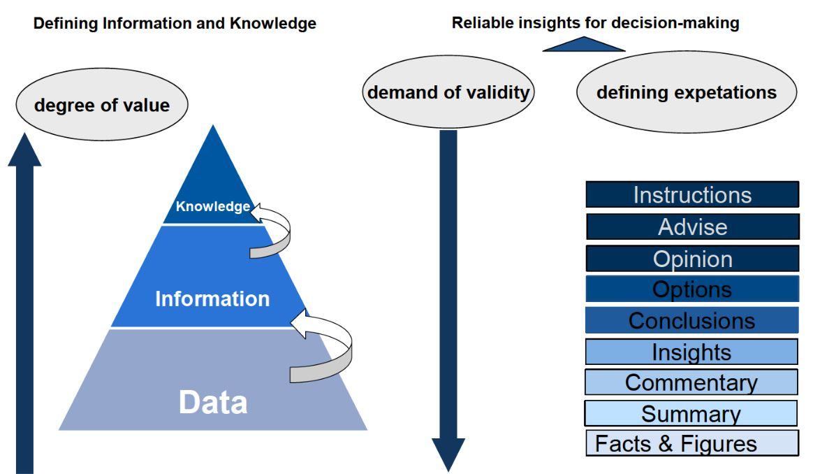
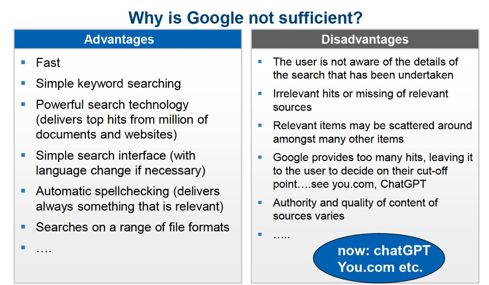

1. Knowledge, Information and their Organization
2. Information research
3. Selection and evaluation of sources
4. Encyclopaedias & dictionaries
5. Libraries / public institutions / research organisations
6. Online Hosts
7. Country information / Makroökonomische Daten
8. Statistical Information
9. Company Information
10. Financial Information
11. Product Information
12. Mergers & Acquisitions
13. Market and Industry Information
14. Press News
15. People Information
16. Patents & Trademarks
17. Wirtschaftsinstitute
 
Authority author's reputation, background, etc... publisher known/respected? referring to other reliable sources or vice versa?
Objectivity Gibt es ein finanzielles, unternehmerisches oder politisches Narrativ oder Kalkül? ^ Kein Ausschlusskriterium, es sich einfach klar machen.
Reliability are facts consistent with known facts? When was the information created or updated?
Ein Werk wird häufig Zitat --> Güte
Auftragsrecherche auch möglich
Neues, junges Unternehmen
Die allermeisten Inhalte sind auf Englisch --> Recherche muss auch Englisch sein.
Scannt irgendwie Websites?
Abhängig von Größe und Rechtsform muss jedes Unternehmen was publizieren, irgendwas muss beim Amtsgericht eingereicht werden.
Jeder kann das Handelsregister einsehen, kann aber aufwendig sein, deshalb gibt es Organe die das anzigen. Unternehmensregister.de.
Auch diese Handelsregister Einträge werden mitdurchsucht.
Website wird häufig im Bereich "Market & Sales, ich suche Kunden..." genutzt.
Nur öffentlich zugängliche Daten!
Fokus auf Marketing und Vertrieb
Erfasst IP Addressen.
Zusaätzlich Leadfeeder Erkentnisse über Websiten und Besucher für Unternehmen liefer
DEALFRONT größerer Fokus auf Europa, auch mit dem Ziel der Kundengewinnung und wer nutzt meine Website?
echo Bot hat Unterprodukte Target und Connect
Länderinformationen, Kennzahlen aus der Volkswirtschaft (BIP, Inflationsraten, Arbeitslosenquote, alles was sich auf eine Volkswirtschaft bezieht, politische Stabliltät, Bildungsstand, bla blabalblabflsabflsadfbalsf)
Für diese Information wendet man sich als erstes an die Außenhandelskammer
In Orbis sind zwar auch Länderinformationen, aber ein Unternehmen kauft sich Orbis wenn es häufiger damit arbeitet. ANFANGEN würde man damit nicht.
cia world factbook ist ganz gut und kann jeder drauf zugreifen.
Fischer Weltalmanach
Auswärtiges Amt vielleicht, ist natürlich politischer und nicht für wirtschaftliches
spiegel.de/jahrbuch (ist auch ein bisschen international, aber es ist eher so mid)
Es gibt auch bisschen was von der FAZ (stichwort Investitionsführer), aber CIA ist am besten
Germany Trade & Invest, Sitz in Bonn
Die publizieren Import- und Exportstatistiken ohne Ende und unendlich Länderanalysen. Es ist eine öffentliche Einrichtung und somit keine kommerziellen Interesse (Außer vielleicht die wirtschaft in Deutschland zu fördern). Geil für Länderinformationen.
Handelsblatt Research Institut macht Auftragsforschung
Global competitiveness report, sehr ausführlich, einmal im Jahr aktualisiert, sehr wirtschaftsorientiert, von dem world economic forum , macht es sehr gut vergleichbar.
EIU (vom Economist, aber seperat), anspruchsvoll, manche EIU Datenbanken werden von der TH angeboten. Sie haben auch Volkswirtschaftliche Rohdaten zum selber analysieren. Daten sind super aktuell. auch Forecasts! auch sehr spezifisch, aber auch schnell teuer.
Auch (internationale) Institutionen, wie statistisches Bundesamt, World Bank, Internationaler Währungsfond, IMF [international monetary fund]
Für einen Trend oder Prognose braucht man Daten aus der Vergangenheit, und das mehr als ein/zwei Jahre.
Öffentliche Institution haben meist kein Daten für spezifische Unternehmen, sind aber sehr verlässlig.
Beim statistischen Bundesamt findet man häufig gute Hilfe, falls man Fragen hat.
Eurostat ist das statistical office der EU.
Daten der einzelnen Länder werden aggregiert.
Früher war das eine Katastrophe, weil es war nie ganz aktuell oder Länder fehlten.
Mittlerweile, durch Digitalisierung, ist es ok und aktuell.
Eropean Economic Statistics
man findet Links zu den statistical offices einzelner Länder.
Data Planet statistical datasets
Informationen über Unternehmen mit welchen man kooperiert,
Konkurrenz beobachten,
Informationen über Unternehmen bei welchem man Arbeiten will: Was können die mir bieten/wie international sind sie?/passt das zu mir, ist das Unternehmen zu groß für mich?
Für Investitionen oder Übernahmen
Unternehmensinformationsrecherche unterscheidet sich also in Intention und im Detailgrad. Manchmal braucht man nur die Anzahl der Mitarbeiter, manchmal detaillierte wirtschaftliche Kennzahlen.
Wichtige grundsätzliche Information über Unternehmen sind Rechtsform (GmbH, GBR, ...) und Größe des Unternehmens.
Diese beiden Informationen entscheiden natürlich auch, wie viele und was für Informationen sich über ein Unternehmen recherchierbar sind. AGs sind häufig sehr schnell mit der Veröffentlichung der Zahlen, um die Aktionäre zu informieren. Kommandit Gesellschaft sind häufig schleierhaft mit Gewinn (ALDI), weil die mit dem Privatvermögen halften oder sowas.
Die EU hat die Strafen für fehlende Daten im Handelsregister in den latzten Jahren deutlich erhöht. Aus diesem Grund sind die Handlesregister heutzutage sehr vollständig.
Allgemein ist man viel offener geworden, um nicht dem Verdacht des Versteckens Vorschub zu leisten.
wer kauft Produkt/Dienstleistungen, Patentinformationen, Marktsättigung, Inhaltsstoffe, Qualität, für Konkurrenz, Wo sind Produktionsstätten, Preise, Wer produziert, Regulationen,
weitere possible source:
Minthel
www.wlw.de (wer liefert was?)
Wichtig:
Messen und Messenkataloge - MediKa
Fachzeitschriften Vergleiche
Immer wichtiger wegen Internationalisierung
Marktanteil in der Branche vergrößern.
Strategie ändern aufgrund von Acquisitions, Siemens macht 1847 nicht das was es heute macht.
eventuell mehrere Märkte abdecken.
Marktfragmentierung
"feindliche Übernahmen"
Seite des Bundeskartelamtes (chronologische Reihenfolge, nicht schön, einfach, ohne money)
M&A journals, Zeitschrift, vielleicht mittlerweile online? bei den Datenbanken
wenn aktuell (Gerüchte): News/Press databases
markus von BvD
SDC ist toll (details?, kostspielig!), sdc ist von USA nach Europa
mergermarket hat Schwerpunkt Europa. (Internationalisierung fehlt!)
Zehpyr ist global, angefangen mit Fokus Europa, täglich aktualisiert, english, teuer (aber geht eventuell), günstiger als SDC, Presseinfos dabei.
Orbis ist auch bei M&A irgendwie dabei.
ownership structures ist wichtig:
-lexis nexis corporate affiliations
People information
Personalsuche
managerdossiers ( genius )
Orbis: Wer sitzt im Management
soziale Medien (linkedin / Xing)
news out of the press [Forbes, Manager Magazin]
external expert network
Expertenvermittlung
Bedarf nimmt zu
in der Regel anonym an EENs wenden
EEN regeln rechtlichen Rahmen, Qualifikation, etc..
Viele Firmen die das machen. (auch schlechte, oder Spezialisierung auf Brance)
patent - 20 Jahre und Gebühren
Patentrecherche, um nicht an etwas zu forschen, voran es schon ein Patent ist
war kompliziert af
mittlerweile kostenfreie Patentrecherche wichtig. dpma, europäisches Partentamt, PAZdpa(?)
trademark = Firmen, Marken etc unterscheidbar machen.
Schutzdauer einer Marke ist grundsätzlich unendlich solange Gebühren bezahlt werden.
auch Sachen wie Flaschenform.
Patentinformationen sind wichtige Unternehmensinformation, Indikator für Innovation eines Unternehmens oder Land.
"Wo könnte man kostenfreie Patentinformationen recherchieren und warum ist das wichtig?"
Scheme for source evaluation
Statista ist kommerziell! Muss man wissen, eventuell manchmal von eigenen Interessen gefärbt.
ALDI KG verschachtelt sich so, dass man den Umsatz nicht herausfinden kann.
Market and indsutry information
Distributionskanäle
fachzeitschriften --> Genios (LexisNexis auch)
Verbände, Kongresse und Konferenzen sind irgendwie wichtig. (Kongressschriften zum Teil bei ProQuest)
Clarinate == ProQuest now
GFK, Gesellschaft für Konsumforschung ==> Primärmarktstudien / Primärmarktforschungen
Sekundärmarktsudien sind nicht so teuer, aus unterschieldichen Quellen und packt die zusammen in einen Bericht.
analyst report von Investmentbanken, sehr speziell und stark finanzlastig.
wenn man keine Ahnung hat: Marketresearch.com
Verbände geben wenig Unternehmensinformation ihrer Mitglieder frei.
verbaende.de
eigene Verbändennamen kennen!
Blendle APP Tageszeitschriften und Zeitungen
alles relevant, fokus: Folien